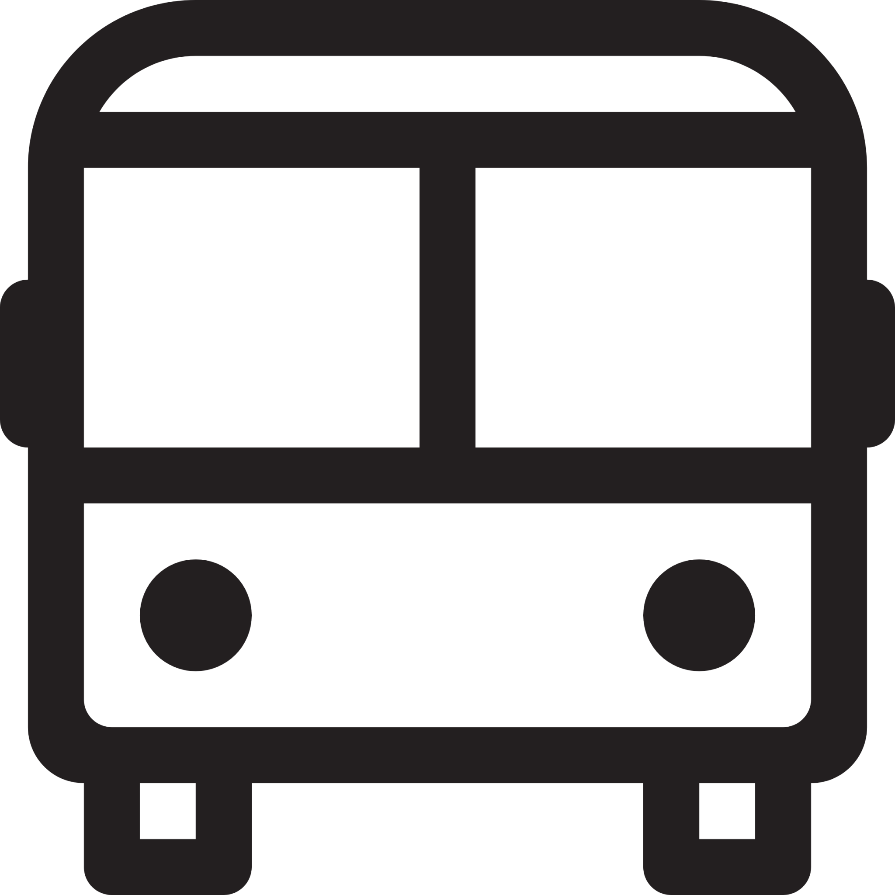

How to Get to St Mary's
St Mary’s University is located in the heart of Twickenham, offering excellent transport links to central London and beyond. Here are the key travel options:
-
 By Train: The nearest station is Strawberry Hill, just a 5-minute walk from campus. It’s served by regular trains from London Waterloo (journey time approx. 35 minutes). You can also travel via Twickenham Station, which is about a 20-minute walk or a short bus ride away.
By Train: The nearest station is Strawberry Hill, just a 5-minute walk from campus. It’s served by regular trains from London Waterloo (journey time approx. 35 minutes). You can also travel via Twickenham Station, which is about a 20-minute walk or a short bus ride away.
-  By Bus: Several bus routes serve the area, including the 33, 281, 267, R68, and R70, with stops near the campus.
- By Car: Limited parking is available on campus, but we encourage using public transport where possible. If driving, Twickenham is accessible via the A316, and you can find parking at nearby pay-and-display car parks.
- By Bike: St Mary’s is bike-friendly, with plenty of cycle racks available across the campus.
For detailed directions, you can use the MySMU app to help plan your journey.